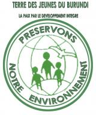

Burundi
Burundi: Présentation du Burundi

Plus d'informations sur Burundi, (vous pourrez CTRLT+CLIC pour suivre le lien)
Burundi: Terre des jeunes Burundi
Notre mission
Notre souhait
est de contribuer
au travail immense
qui se fait déjà
largement
dans
le monde. Nous
voulons apporter
notre modeste
contribution à
cette grande
mobilisation
qui
se fait autour de
ces maux
(dégradation de
l’environnement, le
changement
climatique),
qui
mettent notre
planète en danger
de catastrophe
naturelle sans
précèdent. Nous
aimerions
faire
ce travail avec
humilité et
détermination pour
permettre à des
générations à venir
de mieux
vivre.
Contact
TDJ BURUNDI: SON SIEGE SOCIAL SE TROUVE DANS LE QUARTIER ROHERO, AVENUE DU 18 SEPTEMEBRE N°3004 IB/2 EN FACE DU TERRAIN DE BASKET DE PARQUET. (IMMEUBLE DU CFCIB)
BP: 3226
BUJUMBURA,
TELEPHONE:
+2577944932
Le bureau est
ouvert du lundi au
vendredi de 8h à
16h30 avec une
pause de 30
minutes.
Lire la
suite
Burundi: projet d'adduction d'eau réalisé par TDJ-Burundi


Quelques photos sur le projet d'adduction d'eau réalisé par TDJ-Burundi.
Burundi: Campagne de demande de sponsor pour Terre des jeunes BURUNDI
.jpg)
.jpg)
.jpg)
.jpg)
Terre des jeunes Burundi lance une campagne de recherche de sponsor pour aider à financer ses nombreuses activités tenues dans son local unique à Bujumbura.
Quatre catégories de sponsors sont recherchés:
* Sponsor OR:
1000$ et plus
(grand logo lors
des activités
pendant deux
ans)
* Sponsor ARGENT:
400$ à 1000$ (moyen
logo lors des
activités)
* Sponsor BRONZE:
50$ à 400$ (petit
logo lors des
activités)
* Sponsor de
soutien: moins de
50$, pas de
logo.
Pour les détails du transfert voir le document ci-joint.
Burundi: 22 MARS 2012 : JOURNEE DE L’EAU AVEC TDJ_BURUNDI


Dans les quartiers Nord, précisément dans la commune de Kinama, de la capitale de Bujumbura au Burundi, en date du 22 mars 2012. TDJ_BURUNDI a organisé une journée de l’eau sous le thème l’eau en qualité et en quantité suffisante pour la sécurité alimentaire et cette activité de la journée de l’eau a démontré combien la population a besoin de l’eau propre.
Avant de distribuer de l’eau, les animateurs de TDJ_Burundi dans les quartiers Nord de la Ville de Bujumbura, ils ont d’abord pris un bon temps pour sensibiliser la population qui était présente, surtout les jeunes sur la bonne utilisation de l’eau propre.
Par la suite les jeunes ont demandé au Gouvernement de leurs impliquer dans la gestion de l’eau des fontaines publiques.
Ils ont aussi exprimé leurs souhaits envers les partenaires du développement et à l’Etat Burundais de sursoir sur la mesure de vente de l’eau dans des robinets publiques. Car disent-ils que c’est privé de l’eau propre à la population vulnérable, ce qui les pousse de boire et d’utiliser de l’eau salle.
L’EAU=LA VIE
Nous remercions les sociétés LIQUIDS qui nous octroyé 46 Bouteilles de 10 litres et 89 bouteilles de de 5 litres : info@liquids.bi et KINJU : 10 Box de 500 ml et 5 box de 1.5 ml.
La TDJ_Burundi remercie les sociétés LIQUIDS et KINJU. Lance un appel vibrant aux autres sociétés burundaises, Entreprises, bailleurs de fonds d’emboiter les pas en soutenant la population par le biais de TDJ_Burundi afin de servir la population qui a tant besoin de vos appuis.
TDJ_BURUNDI : journée de l’eau, mars 2012
Mr Jean
NKESHIMANA
Président et
Représentant
Légal
TERRE DES JEUNES DU
BURUNDI -
TransNational_"TDJ_BURUNDI"
ONGD
Tél:(+257)79 944
932 / 77 944
932
BP : 3226
Bujumbura-Burundi'Lire
la
suite
Burundi: TDJ Burundi ouvre son siège social


TDJ Burundi-Transnational ouvre son siège social. Le bureau de l'organisation Terre des jeunes Burundi transnational se trouve dans l'immeuble de Radio du combre fédéral de commerce et de l'industrie du Burundi, Bujumbura.
TDJ BURUNDI: SON SIEGE SOCIAL SE TROUVE DANS LE QUARTIER ROHERO, AVENUE DU 18 SEPTEMEBRE N°3004 IB/2 EN FACE DU TERRAIN DE BASKET DE PARQUET. (IMMEUBLE DU CFCIB)
BP: 3226 BUJUMBURA, TELEPHONE: +2577944932
Le bureau est ouvert du lundi au vendredi de 8h à 16h30 avec une pause de 30 minutes.
Toutes les antennes félicitent TDJ Burundi pour cette réalisation!
Burundi: TDJ Burundi à Busan en Corée du Sud: Communiqué de presse


Terre des jeunes Burundi a participé du 29 novembre au 1 décembre 2011 à Busan en Corée du sud, au quatrième Forum de Haut Niveau sur l’efficacité de l’aide (FHN4) à l’efficacité du développement. Voir le communiqué ci-joint.
Les photos ont été prises lors de la tenue de la conférence de presse dans le cadre de la déclaration finale du 4 Forum de Haut Niveau sur l'efficacité de l'aide au développement.
Burundi: TDJ Burundi à Busan en Corée du Sud

Bonjour,
Je participe dans
le cadre du forum
de haut niveau sur
l'efficacité de
l'aide au
développement, en
repésentant les OSC
du Burundi et c'est
notre TDJ_Burundi
qui a été célection
par les
organisateurs
BetterAid;
donc se sont eux
qui vont me prendre
en charge.
je pense qu'après
ici au Burundi je
ferais une
restitution pour
toutes la société
civile.
Merci
Jean NKESHIMANA
Burundi: Activités organisées par TDJ-Burundi


L’association Terre des Jeunes du Burundi, en date du 6 janvier 2011, nous avons organisé une activité de plantation des arbres fruitiers dans la commune de Mabanda de la province de Makamba.
Nous avons planté plus de 35 000 plants d’arbre fruitiers, ce travail a eu une participation des autorités administratives tant communales que provinciales, les habitats du site de rapatriés, les membres des différentes associations et groupements locaux, jeunes élèves, enfants, femmes, hommes et vieux sont tous venus planter des arbres dans l’objectifs primordial de lutter contre le réchauffement climatique en général.
Après ces activités de plantation, le Président de l’association Terre des Jeunes Burundi, Mr Jean NKESHIMANA a prononcé un discours de sensibilisation dans lequel, il a fait appel à tout le monde en général de veiller à la bonne gestion de notre environnement.
Cette activité de plantation d’arbres fruitiers a été clôturée par des jeux folkloriques dont les thèmes étaient centrés sur la reforestation et la protection de l’environnement, les devinettes sur l’environnement ont une place et un match de football a été joué pour clôturer les activités du jour.
Fait à
Bujumbura, le
20/01/2011
Jean NKESHIMANA
MISE À JOURLire la suite
Burundi: Burundi ...et toujours des photos

TERRE DES JEUNES DU BURUNDI -TRANSNATIONAL_"TDJ_BURUNDI"
Tél:(+257)79 944 932
BP : 3112 Bujumbura-Burundi.
Burundi: Burundi: encore des photos


Encore des photos des dernières activités de TDJ Burundi.
Jean
NKESHIMANA
TERRE DES JEUNES DU
BURUNDI
-TRANSNATIONAL_"TDJ_BURUNDI"
Tél:(+257)79 944
932
BP : 3112
Bujumbura-Burundi
Burundi: Photos du Burundi


Quelques photos des dernières activités de TDJ Burundi.
TERRE DES JEUNES DU BURUNDI -TRANSNATIONAL_"TDJ_BURUNDI"
Tél:(+257)79 944 932
BP : 3112 Bujumbura-Burundi.
Burundi: Terre des jeunes Burundi officiellement agréée par le gouvernement
 Une
bonne nouvelle,
notre association
Terre des Jeunes du
Burundi vient
d'être agréee par
le gouvernement du
Burundi (ordonnance
ministérielle
#530/1354 du 27
septembre 2010) et
je vous tiens à
vous informer que
nous sommes
contents
aujourd'hui car
nous allons oeuvrer
étant bien reconnu
sur toute la
territoire
nationale du
Burundi, en plus
l'association Terre
des Jeunes du
Burundi
TRANSNATIONAL., ce
travail nous a
couté cher tant de
moyen financier et
du temps et surtout
la sympathie, si
c'est un moment de
nous mettre au
travail et j'ose
espérer que nous y
parviendrons.
Une
bonne nouvelle,
notre association
Terre des Jeunes du
Burundi vient
d'être agréee par
le gouvernement du
Burundi (ordonnance
ministérielle
#530/1354 du 27
septembre 2010) et
je vous tiens à
vous informer que
nous sommes
contents
aujourd'hui car
nous allons oeuvrer
étant bien reconnu
sur toute la
territoire
nationale du
Burundi, en plus
l'association Terre
des Jeunes du
Burundi
TRANSNATIONAL., ce
travail nous a
couté cher tant de
moyen financier et
du temps et surtout
la sympathie, si
c'est un moment de
nous mettre au
travail et j'ose
espérer que nous y
parviendrons.
merci de la bonne reception
Jean NKESHIMANA
Burundi: Les nouvelles de terre de jeunes de Bujumbura (Burundi)


{kind=link}
{kind=link}
{kind=link}
{kind=link}
{kind=link}
{kind=link}
{kind=link}
Ce samedi, le 17/07/2010, l’association Terre des Jeunes du Burundi a organisé une activité de débouchage des caniveaux et de ramassage des sachets dans les différents quartiers de la capitale de Bujumbura.
Les images représentent les activités de :
Ramassage des
sachets dans les
quartiers de
Bujumbura
Débouchage des
caniveaux dans les
quartiers de
Bujumbura
Burundi: Présentation du CA de TDJ Burundi
|
N° |
Nom et prénom |
TITRE |
|
1 |
NKESHIMANA Jean |
Représentant Légal et Président |
|
2 |
BAGAYUTUNZE Alexandre |
Vice-Président |
Burundi: Présentation de l'organisme TDJ Burundi
Terre des Jeunes du Burundi Transnationale
-
Présentation générale de l’association Terre des Jeunes du Burundi Transnationale :
L'Association Terre des Jeunes du Burundi Transnationale a été créée dans le but de lutter contre la déforestation au Burundi en particulier et dans la sous région en générale. L'ambition de l'Association Terre des Jeunes du Burundi Transnationale est le reboisement est de proposer des moyens simples aux populations locales pour freiner la déforestation et reboiser les zones sinistrées en s'appuyant sur des expériences et techniques simple et adapté à la population.
L’approche de l’association Terre des Jeunes du Burundi Transnationale consiste à sensibiliser et former la population, créer des pépinières et organiser des journées de reboisement, proposer des alternatives au charbon de bois pour la cuisson des aliments, ouvrir des ateliers de poterie pour la production de foyers efficaces en argile, protéger et implémenter une gestion durable des zones reboisées.Lire la suite